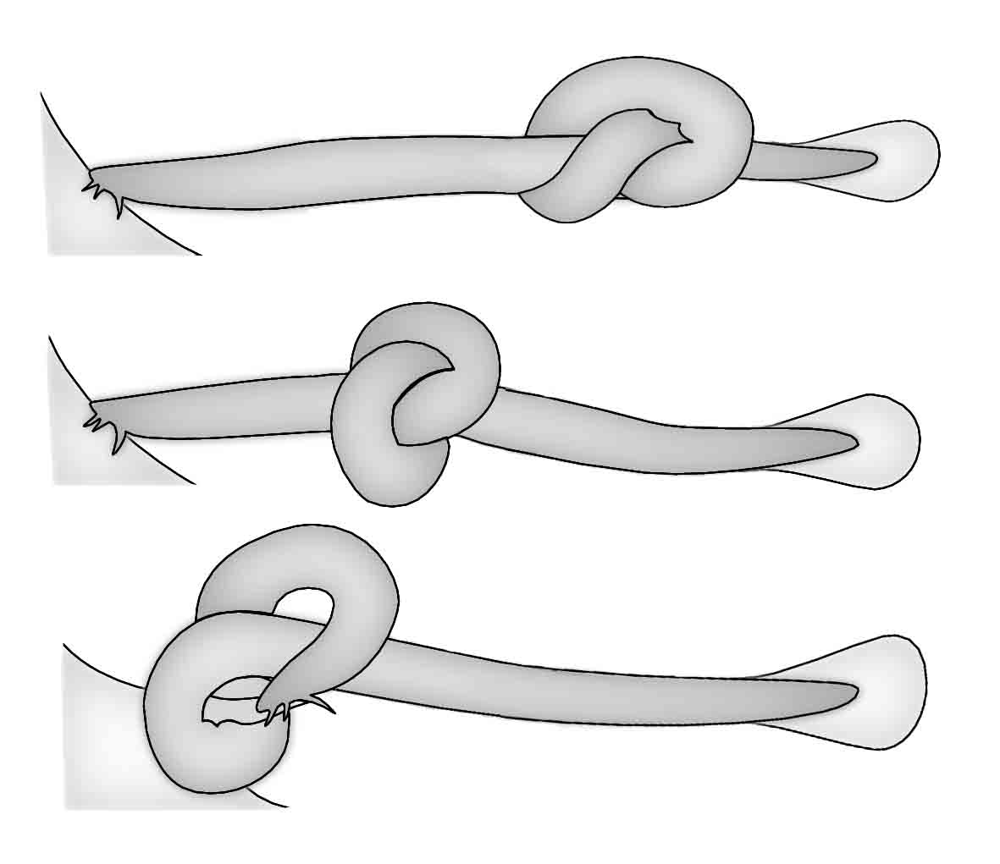

Paramyxine atami
50-75cm
2. Mixino japonés
Eptatretus okinoseanus
10-80cm
3. Tiburón gato manchado japonés
Cephaloscyllium umbratile
30-60cm (Lv.15cm)
COMPORTAMIENTO DE ANUDARSE
Peces bentónicos de la zona de transición 01 |
Puede que no sea exactamente un pez de aguas profundas, ya que a veces es avistado por buceadores. El tiburón gato manchado japonés, se encuentra en aguas poco profundas y hasta varios centenares de metros de profundidad, es una especie de tiburón dócil con una gran fuerza y la inusual costumbre de llenar el estómago de agua e hincharlo como los peces globo. Son ovíparos y producen huevos provistos de lianas que pueden utilizar para agarrarse a las rocas, etc. Por otro lado, el mixino japonés es un pez voraz que se entierra en el cuerpo de los peces muertos y se alimenta de su carne y órganos. Sus ojos están enterrados bajo la piel y no tiene escamas ni mandíbulas. A pesar de carecer de estas características, los primeros peces que aparecieron en la prehistoria fueron los peces sin mandíbulas. Las hendiduras branquiales son diferentes: el mixino negro tiene seis a cada lado, mientras que la mixino japonés o mixino púrpura tiene ocho. También tienen el inusual comportamiento de anudarse y de producir una gran cantidad de espesa mucosa que expulsan para huir de los enemigos. |
|
|
1. Mixino marrón Paramyxine atami 50-75cm 2. Mixino japonés Eptatretus okinoseanus 10-80cm 3. Tiburón gato manchado japonés Cephaloscyllium umbratile 30-60cm (Lv.15cm) |
|
|  COMPORTAMIENTO DE ANUDARSE |